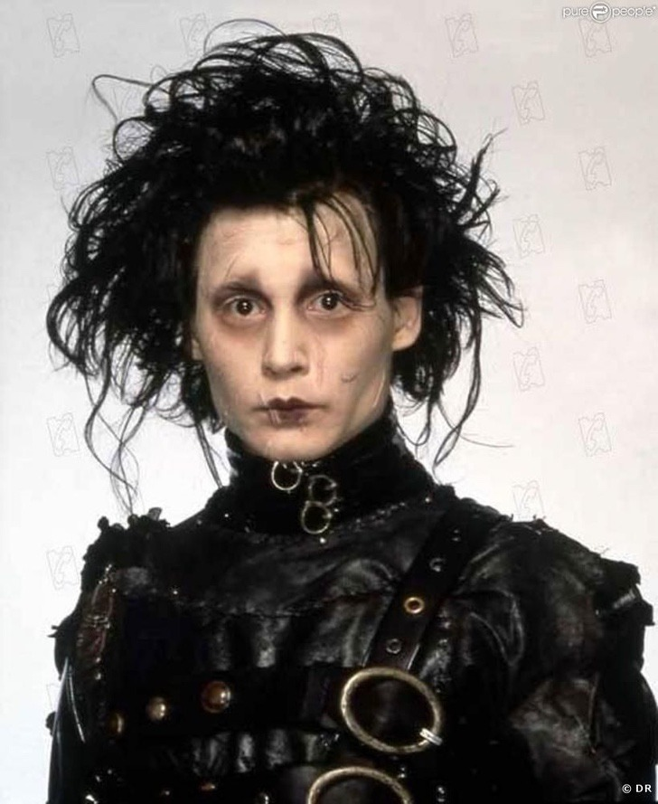
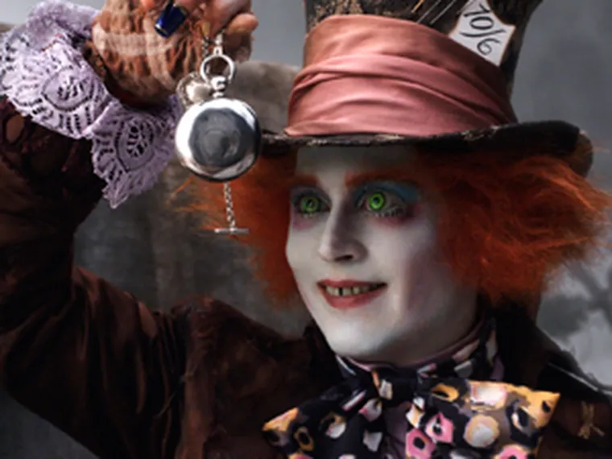
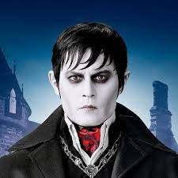
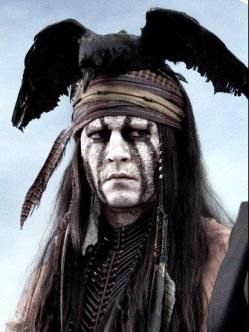

Johnny Depp

Johnny Depp se ha destacado a lo largo de su carrera por interprrtar innumerables personajes fantasticos,
miticos, cada uno de forma unica y excepcional logrando que queden marcados para siempre y recordados durante
mucho tiempo.
Personajes como el el Sombrerero, Edwuard manos de tijera y Willie Wonka han sido tan solo unos pocos de las
iconicaa interpretaciones de Johnny Depp.
| Nombre de la pelicula | Personaje | Año de estreno | Trailer |
|---|---|---|---|
| El joven manos de tijera | Edward | /1990 | El joven manos de tijera |
| Saga Piratas del caribe | jack sparrow | /* anexar imagen*/2003 | Piratas del Caribe: La Maldición del Perla Negra |
| 2006 | Piratas del Caribe: El cofre del hombre muerto | ||
| 2007 | Piratas del Caribe: El fin del mundo | ||
| 2011 | Piratas del Caribe: Navegando aguas misteriosas | ||
| 2017 | Piratas del Caribe: La venganza de Salazar | ||
| Charlie y la fabrica de chocolate | Willie Wonka | 2005 | Charlie y la fabrica de chocolate |
| Saga de Alicia en el pais de las maravillas | El sombrerero | 2010 | Alicia en el pais de las maravillas |
| 2016 | Alicia a tráves del espejo | ||
| Sombras tenebrosas | Barnabas Collins | 2012 | Sombras Tenebrosas |
| El llanero solitario | Toro | 2013 | El llanero solitario |
| Saga de Animales fantasticos y donde encontrarlos | Gellert Grindelwald | 2016 | Animales fantasticos y donde encontrarlos |
| 2018 | Animales fantasticos: Los crimenes de Grindelwald |
Han sido aproximadamente 64 producciones en las que ha participado Johnny Depp, tanto en personajes principales como secundarios, pero sin duda en cada uno de ellos podremos ver el gran talento que tiene tras la pantalla